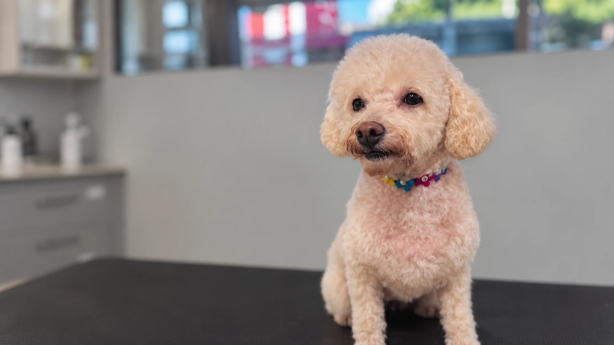
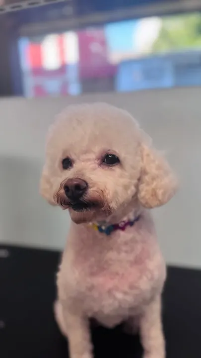
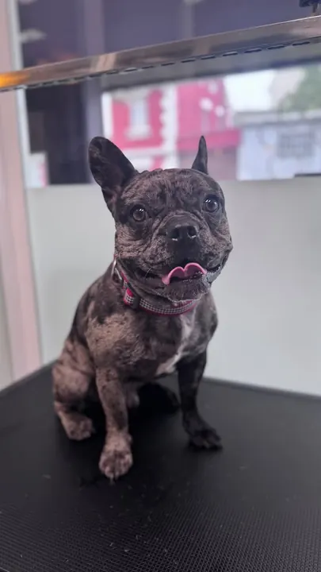
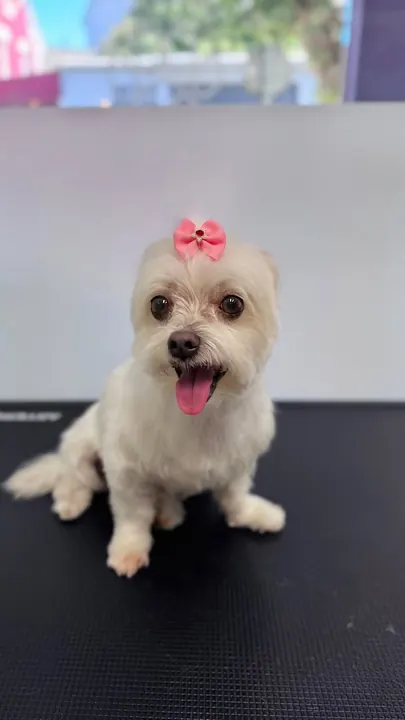

Un estilo propio
Siluetas e acabados adaptados a cada can.

Hai cortes que se ven bonitos. E cortes que, ademais, se viven cómodos. Atopamos o seu, tesoira a tesoira.
O corte comeza moito antes de coller as tesoiras: observamos o manto, falamos da vosa rutina e eliximos un acabado que poidas manter na casa. Shadia traballa as formas e os volumes con paciencia, adaptando o arranxo ao can que ten diante.
Podemos orientar o acabado cara ao estilo da súa raza ou buscar unha opción máis práctica. Se hai nós, primeiro valoramos como resolvelos sen comprometer a súa comodidade; conservar a lonxitude nunca está por riba do seu benestar.
Siluetas e acabados adaptados a cada can.
Lonxitudes compatibles cos vosos paseos e coidados.
Atención especial ao rostro, ás patas e ao acabado.

Cans cuxo manto admite un traballo a tesoira, como caniches, bichóns e outros mantos de crecemento continuo. Tamén para arranxos de contorno, sempre tras valorar o pelo e o seu estado.

O seu ritmo é parte do coidado.Atención individual · Decisións contigo
Revisamos o pelo e comentamos o acabado desexado.
Antes de elixir un estilo, miramos a textura, o estado do pelo e como o mantedes na casa. A referencia que traias axúdanos a falar dun acabado posible e cómodo.

Baño, secado e preparación segundo as súas necesidades.
O corte necesita unha base ben preparada. Valoramos o desenredado, o baño e o secado segundo o manto; se hai nós que molestan, acordamos contigo como resolvelos antes de seguir.

Corte progresivo, con pausas se as precisa.
Traballamos as formas e repasamos contornos, rostro e patas. O longo adáptase ás posibilidades reais do pelo; as pausas e a súa comodidade forman parte de como avanzamos.
Repasamos o resultado e a rutina entre visitas.
Ao recollelo, comentamos o acabado e como chegar ben á seguinte visita. Orientámoste sobre as zonas que revisar e as ferramentas que encaixan coa lonxitude elixida.
«Máis que un corte é amor e coidado.»
Preme para reproducir a escena completa aquí mesmo, con son e controis. Podes pausar, avanzar ou vela a pantalla completa.
Fotos de clientes de Pelucans. Preme para ampliar.



A sesión comeza antes de entrar no salón e continúa cos coidados da casa.
Trae unha foto do estilo que che gusta e cóntanos canto tempo podes dedicar ao cepillado. A referencia serve para conversar: a textura, o volume e o estado do pelo determinan o acabado posible.
Revisamos especialmente axilas, inguas, detrás das orellas e zonas de rozamento do arnés. Se hai nós adheridos á pel, explicámosche as opcións antes de escoller unha lonxitude. O obxectivo é que o arranxo resulte cómodo tamén despois de saír do salón.
Entre citas, comproba o manto cun peite axeitado, por zonas e sen tirar. Mantén unha rutina que chegue ás capas interiores; un acabado longo necesita máis mantemento ca un práctico.
Si. Axúdanos a entender o estilo que che gusta. Explicarémosche que se pode adaptar ao seu tipo de pelo e ao mantemento que queiras facer.
Valoramos a súa proximidade á pel e a tolerancia do can. Se desenredalos supón tirós ou molestias, buscamos xuntos unha alternativa máis cómoda.
Depende do tamaño, a cantidade de pelo e o seu comportamento. Ao reservar orientámoste e reservamos o tempo que precisa, sen fixar unha duración igual para todos.
Cóntanos como é, que lle gusta e que precisa. Do resto encargámonos nós, con calma.